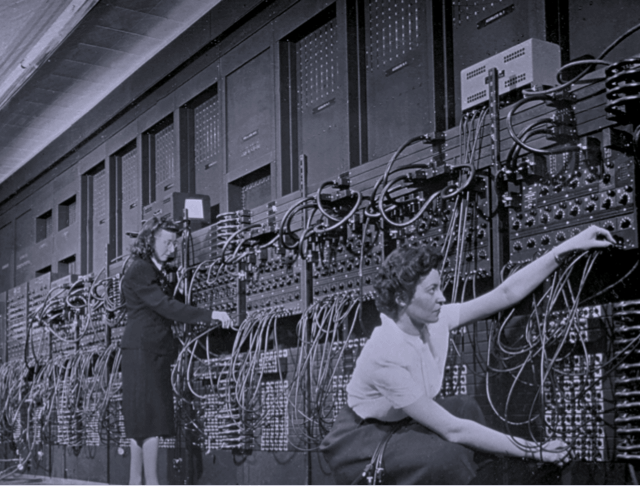
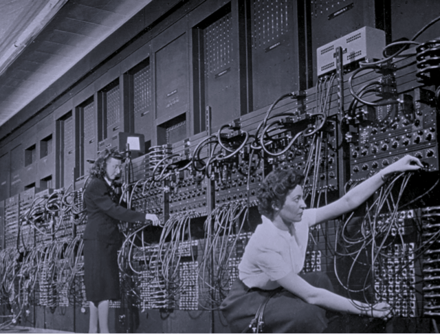

Hello world pale blue dot.
Un podcast que explora el mundo de la programación. Nuevos episodios, todos los jueves cada 15 días.

De dónde venimos
Our posturings, our imagined self-importance, the desilusion that we have some priviliged position in the Universe, are challenged by this point of pale light.
Our planet is a lonely speck in the great enveloping cosmic dark. In our obscurity, in all this vastness, there is no hint that help will come from elsewhere to save us from ourselves.
Invitadas/os estelares


 

Algunos de nuestros temas

Trabajo remoto

Repensando la programación

Bases del código

Seguridad informática